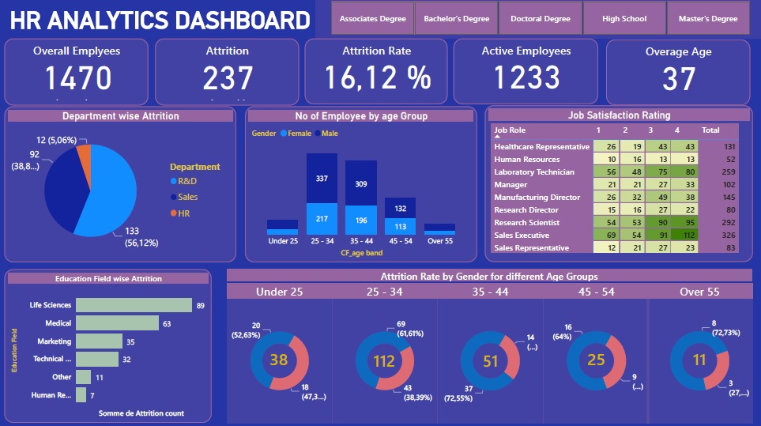
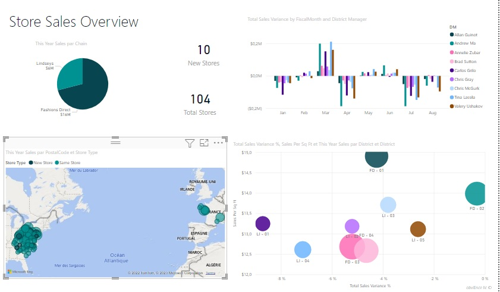
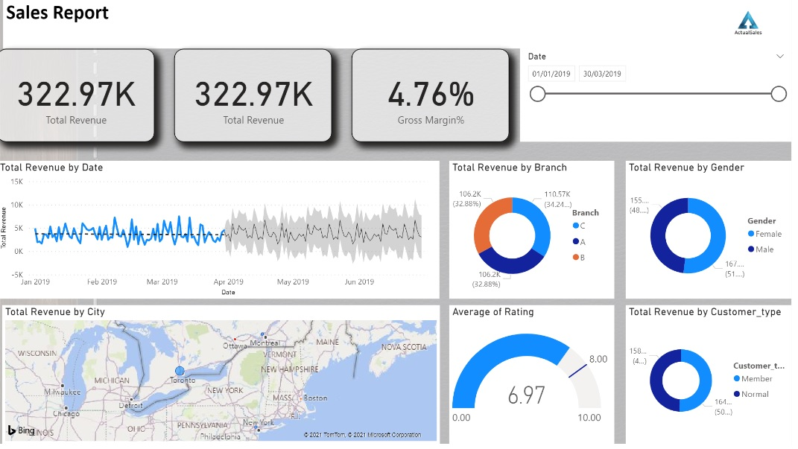

January 2025
This Power BI HR Analytics Dashboard provided a comprehensive overview of employee attrition and workforce trends. It included key metrics such as the overall employee attrition rate, broken down by gender and age groups, allowing HR teams to identify patterns and potential areas of concern. Additionally, the dashboard displays the total number of active employees, enabling organizations to track workforce stability. With interactive visualizations, users can analyze trends, compare demographics, and gain actionable insights to improve employee retention and workforce planning.


In this project, we extracted raw sales data from various sources and refined it in Power Query to enhance its usability for analysis. We then we created visualizations and established relationships across multiple databases using Power BI.

This Power BI web marketing dashboard provides key insights into website performance, including total bounces, average time spent on a page, and the top five most viewed pages by country. It enables a comprehensive analysis of user engagement, helping to identify trends and optimize marketing strategies for improved audience retention and interaction.

In this project, we analyzed a call center dataset by calculating and evaluating key performance indicators (KPIs) such as Average Handle Time (AHT), abandoned call rate, answered call rate, and service level.

This Power BI dashboard offers a comprehensive view of sales performance, featuring key performance indicators (KPIs) such as total sales, variance compared to the previous year, and target achievement status. It also highlights the top-performing salespersons, providing valuable insights into individual contributions and overall business growth.

This Power BI project dashboard provide a detailed analysis of sales performance. Using a sales Excel file, we drill down into revenue across multiple dimensions, including date, location, and gender. The dashboard allows users to explore trends, compare sales across different categories, and gain valuable insights for data-driven decision-making. With interactive visuals and filters, users can seamlessly analyze sales patterns and identify key performance drivers.
This project features 39 SQL SELECT queries, ranging from basic to advanced multi-table JOIN queries. The database plays a crucial role in recording and managing all hospital activities.
In this project, we performed data calculations using basic formulas and functions, followed by efficient sorting and filtering. We also explored one of Excel’s most powerful features—the Pivot Table. Additionally, we delved into advanced database functions and macros to automate common Excel tasks and improve efficiency.